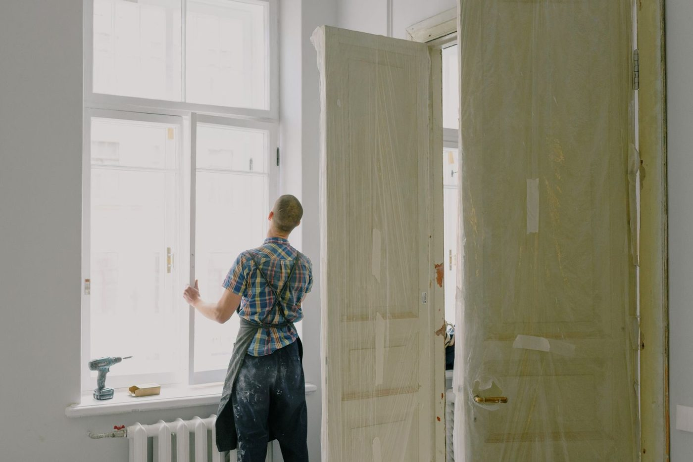
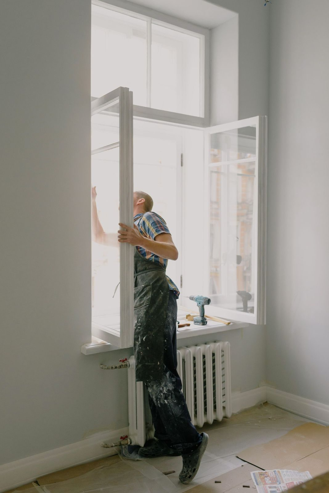

Serving all of Charleston
YardSharks handles landscape maintenance through home improvements for residential and commercial properties across Charleston, from its base in Mount Pleasant.

YardSharks is based in Mount Pleasant and serves all of Charleston. The business lists landscape maintenance through home improvements, is licensed and insured for residential and commercial properties, and takes on both kinds of work.

1106 Ocean Breeze Ct, Mount Pleasant, SC 29464
Monday to Friday 6:00 AM to 7:30 PM · Saturday and Sunday 7:00 AM to 7:30 PM